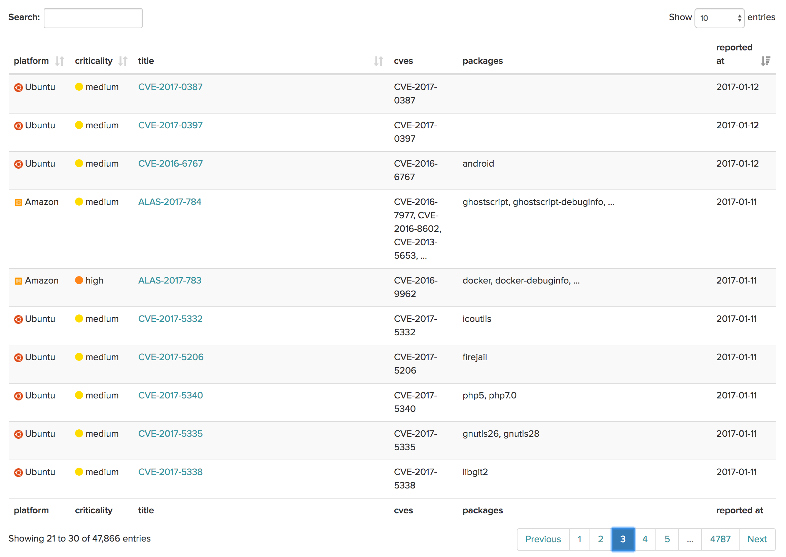
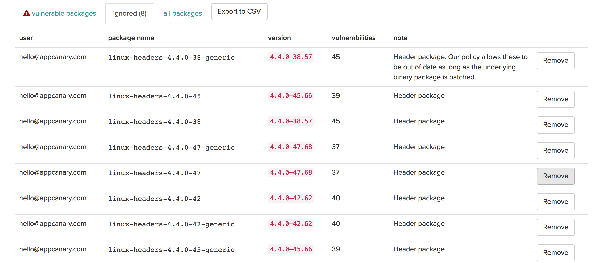
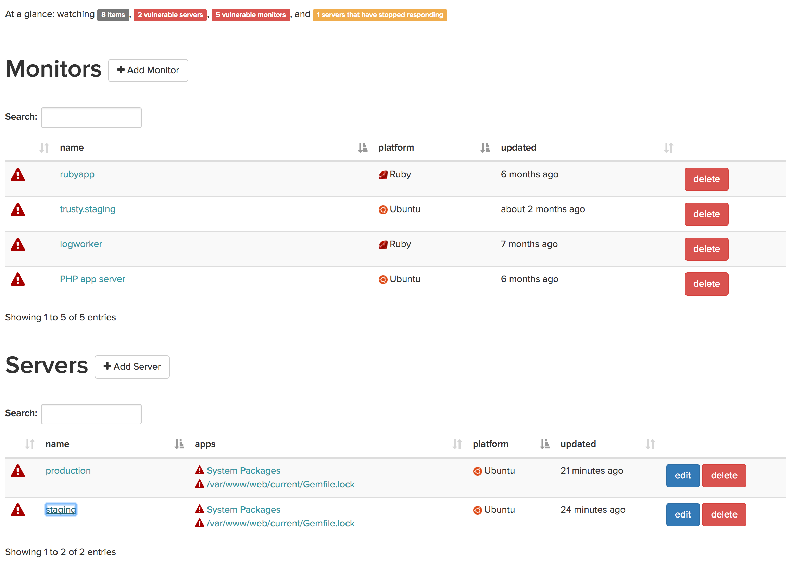

New Year, New Appcanary Features
We’ve been hard at work the past few months on lots of features touching every aspect of our product, and to ring in the new year, we’re going to announce them all at once.
Search our vulnerabilities
You can now browse and search every vulnerability Appcanary knows about! It’s pretty snazzy:

Automatically upgrade packages
We’ve had this feature for Ubuntu, and now we’re adding it for CentOS.
If you have the appcanary agent installed, you can run appcanary upgrade, and
we’ll automatically upgrade all of your vulnerable packages to the lowest
version that fixes all the vulnerabilities we know about.
Resolve vulnerabilities
There’s now a “marked resolved” button that lets us know that you don’t want to be notified about a vulnerability. This is used if a vulnerability doesn’t affect you, or if you are accepting the risk based on some other mitigation’s (i.e. you’re not using the vulnerable feature of the package, the port in question is blocked by a firewall, etc). We give you the opportunity to record your reasoning and provide a full audit trail of every vulnerability you mark as resolved:

Brand new dashboard
We just pushed a brand new UX for our dashboard. You can sort and search and sort all of your servers and monitors. Check it out.

The Appcanary rubygem
We released the Appcanary gem. This gives us tighter integration with ruby projects, you can either check your ruby project for vulnerabilities as a one-time check, or set up a monitor with notifications. You can see the source here.
Our gem is still very early, so we very much want your feedback. Please let us know what you think at hello@appcanary.com
CentOS 6 support
Last but not lease, we fully support CentOS 6 along with CentOS 7.